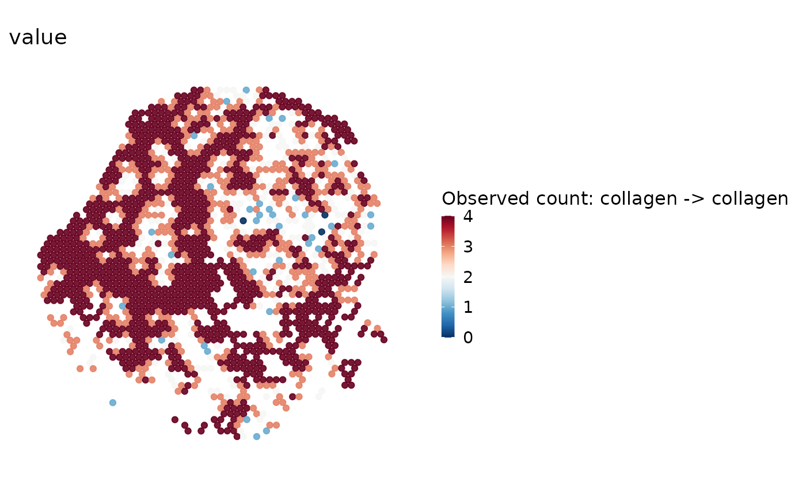
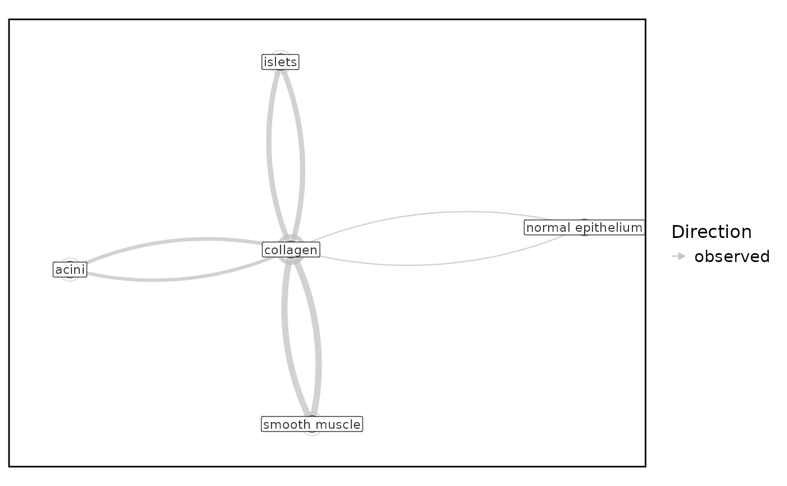
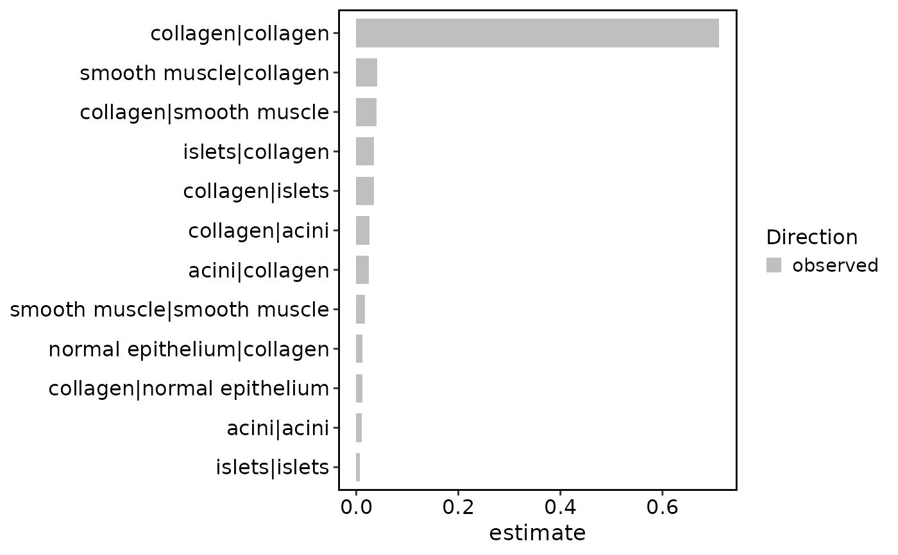
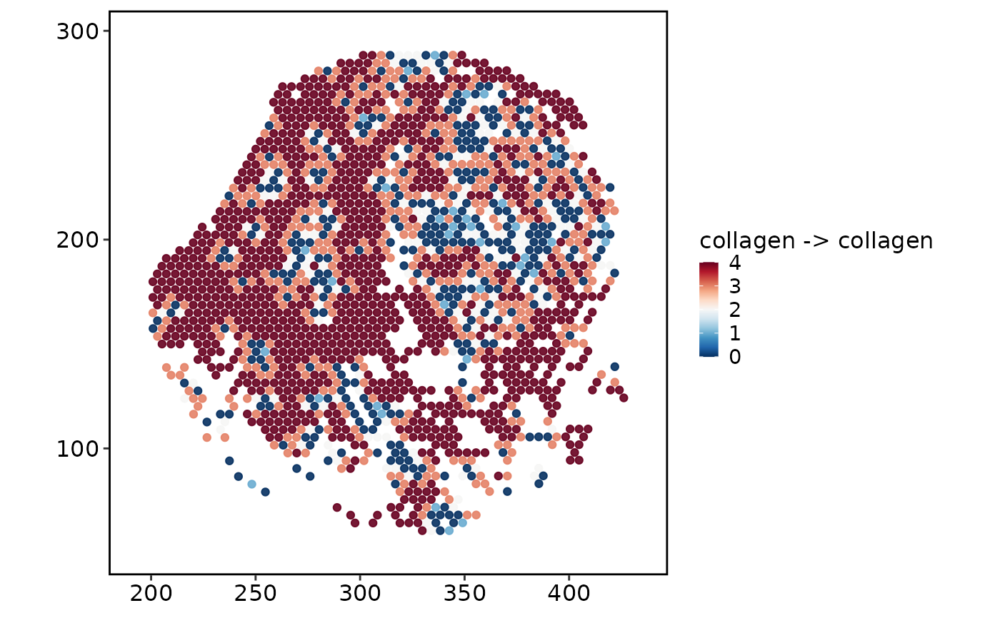

Visualize results produced by RunSpatialNeighborhood() using spatial,
statistical, and network plotting conventions.
Usage
SpatialNeighborhoodPlot(
srt,
method = NULL,
plot_type = c("heatmap", "network", "stat", "spatial"),
comparison = NULL,
condition = NULL,
value = c("estimate", "fraction", "count"),
FDR_threshold = 0.05,
top_n = 30,
layout = c("fr", "nicely", "kk", "circle", "mds"),
edge_size = c(0.4, 2),
cols.enriched = "#d7301f",
cols.depleted = "#2b8cbe",
cols.ns = "grey75",
pair = NULL,
image = NULL,
overlay_image = TRUE,
coord.cols = c("col", "row"),
split.by = NULL,
palette = "RdBu",
palcolor = NULL,
legend.position = "right",
legend.direction = "vertical",
legend.title = NULL,
theme_use = "theme_scop",
theme_args = list(),
combine = TRUE,
nrow = NULL,
ncol = NULL,
byrow = TRUE,
seed = 11,
verbose = TRUE,
...,
image.scale = c("lowres", "hires")
)Arguments
- srt
A
Seuratobject.- method
Stored neighborhood method to plot. If
NULL, the active method is used.- plot_type
Plot type. One of
"heatmap","network","stat", or"spatial".- comparison, condition
Optional filters for stored result tables.
- value
Column used as the plotted effect value.
- FDR_threshold
FDR cutoff used to mark significant pairs.
- top_n
Number of pairs to show for network and statistic plots.
- layout
Network layout.
- edge_size
Network edge size range.
- cols.enriched, cols.depleted, cols.ns
Colors for direction categories.
- pair
Pair to visualize for
plot_type = "spatial", either"from|to"or a length-2 character vector.- image
Name of the Seurat spatial image. Required when multiple images are present; a single image is selected automatically when
NULL.- overlay_image
Whether to draw the selected spatial image for
plot_type = "spatial".- coord.cols
Metadata coordinate columns used when no Seurat image coordinates are available.
- split.by
Optional metadata column identifying conditions for differential neighborhood statistics.
- palette, palcolor
Palette name (thisplot::show_palettes) or custom colors.
- legend.position, legend.direction, legend.title
Legend placement (
"none","left","right","bottom","top"), direction, and title.legend.title = NULLuses the group name.- theme_use
Theme name or function.
- theme_args
Theme name or function, plus extra theme arguments.
- combine, nrow, ncol, byrow
Combine plots with patchwork.
combine = FALSEreturns a list of ggplots.- seed
Random seed used by layouts and jittered plot layers.
- verbose
Whether to print the message. Default is
TRUE.- ...
Additional arguments passed to the selected backend.
- image.scale
Image scale factor matching the raster stored in the selected image. Use
"hires"for a hires raster; do not modify Seurat scale-factor slots.
Examples
data(visium_human_pancreas_sub)
spatial <- visium_human_pancreas_sub
spatial <- RunSpatialNeighborhood(
spatial,
group.by = "coda_label",
coord.cols = c("x", "y"),
k = 4,
verbose = FALSE
)
SpatialNeighborhoodPlot(spatial, plot_type = "heatmap")

SpatialNeighborhoodPlot(spatial, plot_type = "network", top_n = 12)

SpatialNeighborhoodPlot(spatial, plot_type = "stat", top_n = 12)

SpatialNeighborhoodPlot(
spatial,
plot_type = "spatial",
overlay_image = FALSE,
coord.cols = c("x", "y")
)
